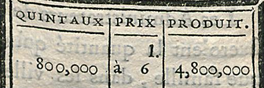

Zahlen
Zahlen im gedruckten Text können verschiedene Funktionen haben. So bei hochgestellten Zahlen können diese Referenzen in Form von Fuß- oder Endnoten darstellen. Aber auch mathematische Funktionen können mit Zahlen ebenfalls dargestellt werden.
Grundsätzlich sind Zahlen als solche zu transkribieren. Werden die Zahlen entsprechend hoch- oder tiefgestellt dargestellt werden diese als spezifische Unicode Hexadezimal-Entität wiedergegeben.
Sind große Zahlen in Blöcken gedruckt, sind alle Leerzeichen auf Grundlage der Vorlage zu übernehmen.
Bei Zahlenblöcke mit Komma wird kein Leerzeichen nach dem Komma gesetzt. Wenn ein Leerzeichen vorhanden ist, ist dieses zu transkribieren.
